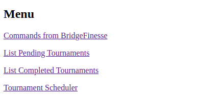
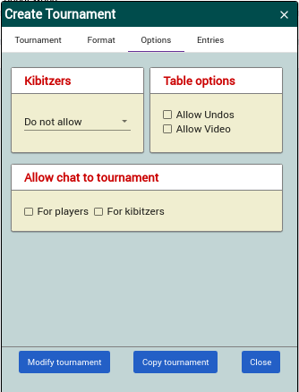
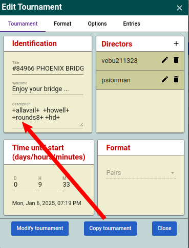

Creating a tournament¶
Using BBO’s Tournament scheduler¶
BBO has a tool which allows you to automatically create tournaments froma scheduler ( see the documentation here)
Log into the scheduler at https://webutil.bridgebase.com/v2/vacbl/vacbl_login.php

Make sure you have Host Name selected, then add the club’s username and password.
You will see the menu …

To create a schedule click on Tournament Scheduler and you will see the Tournament Scheduler

Note that the times are based on New York time and New York is usually 5 hours behind UK time. Our tournaments start at 14:20 New York time (use the 24 hour clock).
NB check that the times are correct when we switch to and from British Summer Time.
Tournaments are automatically created on the day that they are scheduled.
Once created, the tournaments can be modified as we currently do.
The schedule can also be modified should it be necessary.
Using first principles¶
This document is based on the EBU document Virtual Club Manager. This has screen shots, but does not necessarily cover Phoenix’s policies. For a fuller description see Guide for Creating and Managing a Tournament on BBO.
Log into BBO using the club’s on-line director’s login name and password.
Click on the Director tab.
Click on the Create Tournament button.
In the Create Tournament panel there are four tabs:
the Tournament tab:

Give the Tournament a title (this is seen by members searching for the tournament when they wish to register), e.g.
Phoenix Bridge Club 8 June 2020
Create or amend a Welcome Message if appropriate. (This is seen by members as the tournament launches.)
The Description field is used to ensure that the tournament does not start until all registered players are on-line, and to define the movement.
The code to handle registered player is +allavail+.
We will use a Howell movement for eight tables or fewer and a Mitchell for nine tables or more. Here, we will set up the default as a Howell: +howell+ +rounds9+. (We currently expect eight or nine tables for our tournaments.)
If nine or more tables register for an event the director need only remove the text +howell+ +rounds9+ from the description.
For the avoidance of doubt:
for 8 or fewer tables use: +allavail+ +howell+ +rounds9+
for 9 or more tables use: +allavail+
See the table at the end of this section.
For more details see BBO Description settings for tournaments
Avoid +howell+ +hm18+ as this give revenge rounds for seven or eight tables (see this BBO document.)
Enter the hours, days and minutes until the tournament will start.
The actual start time will be generated and shown for you to check. (The tournament remains hidden in the BBO events screen until two hours before the start time.)
Enter the BBO username of any other director associated with the event (if any). Please ensure that the Club’s director (vebu211328) is at the top of the list as all director’s calls go to the director at the top.
The format should say Pairs
the Format tab:

Enter the number of hands to be played (18 or 24 for example). We use 18.
The minutes to be allowed per board (6, 7 or 8 for example). We use 8. If a table has not completed a board they will be moved on at the expiry of the time at the table and BBO will attempt to allocate a score. If all of the tables have finished early, they will be moved on.
The number of boards per round (2 or 3 for example)
Scoring should be Matchpoints
Barometer should be checked to allow players to see their scores during the game.
Movement should be Clocked
Deal Source: Use random deals
the Options tab:
Kibitzers: Do not allow
Allow chat to tournament: uncheck both For players and For kibitzers
Table options: uncheck Allow Undos and Allow Video
the Entries tab:

Maximum entries. This is the maximum number of pairs that will be allowed to register. (Generally we have no limit. The default is 40 which should be adequate.)
Uncheck Allow robots. This means that players will not be able to elect to play with a robot as a partner. (NB do not create the tournament with this checked - you cannot remove it later and you will need to recreate the tournament from scratch.)
In Type enter BBUL
Set the Entry fee to 300 (Note this is in cents not dollars)
Uncheck Stars plays free
In Restrictions check:
Include players followed by host
Include custom list.
Finally, click on Create Tournament.
| Tables | Description | Boards | Boards/round | Works for |
|---|---|---|---|---|
| 3 | +allavail+ +howell+ +hm18+ | 20 | 4 | 3 tables |
| 4 | +allavail+ +howell+ +hm18+ | 18 | 3 | 4 tables |
| 5-8 | +allavail+ +howell+ +rounds9+ | 18 | 2 | 5-8 tables |
| 9+ | +allavail+ | 18 | 2 | 9+ tables |
NB Most things can be modified up to the point that the tournament starts, except Allow robots in the Entries section.
Copying a tournaments¶
As we are holding weekly tournaments, and the general format will not change, it makes sense to use the Copy Tournament function to create next week’s tournament.
To create next week’s tournament, click on the Directors tab, select Pending Tournaments, and click on this week’s tournament. Choose Edit Tournament from the menu, and when the Create Tournament box appears, click on Copy Tournament. It then only remains to change the Title (NB th title will state “Pairs Bridge Club” and you should change the Pairs to Phoenix”) and add 7 days to the Time until start. Then click on Modify Tournament to save.
To setup a 24 board tournament¶
See Running Howell movements with small table numbers for a dicussion of settings for rounds and board numbers
To create an 8x3 (24) board tournament


To setup a 21 board tournament¶
To create an 7x3 (21) board tournament